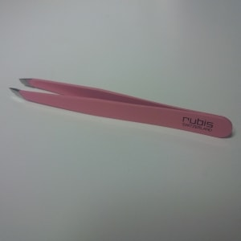
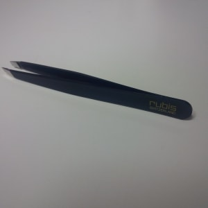
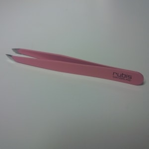
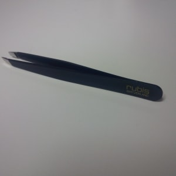

Wer ist Dermalogica?
Dermalogica stellt seit 1986 innovative Unisex-Hautpflegeprodukte mit hochwirksamen Inhaltsstoffen her. Die eigens für Dermalogica entwickelte Hautanalyse - das Face Mapping - gewährleistet, dass jeder die für seine Hautgesundheit passende Pflege erhält. Die Produkte werden nur aus reinsten und besten Inhaltsstoffen hergestellt, die dazu beitragen, die Gesundheit der Haut zu verbessern und zu bewahren.
Dermalogica ist das weltweit erfolgreichste professionelle Hautpflegesystem. Auf dem englischsprachigen Markt gilt Dermalogica als die VIP Kosmetikmarke Nr. 1 - Stars wie Victoria und David Beckham, Alicia Keys oder Sarah Jessica Parker schwören auf die Produkte.
Dermalogica hat sich voll und ganz der Hautgesundheit verschrieben: Wirksame Inhalte statt glamuröser Verpackungen, klare Aussagen statt irreführender Werbebotschaften.
Der Inhalt zählt - nicht die Verpackung!
Dermalogica Produkte sind nicht komedogen, sie enthalten weder porenverstopfendes Mineralöl oder Lanolin, irritierende künstliche Farb- oder Duftstoffe, noch austrocknenden denaturiereten Alkohol oder Formaldehyd. Zudem wird bei der Entwicklung der Produkte auf Umweltverträglichkeit geachtet. Alle Bestandteile stammen aus ökologisch unbedenklichen Quellen und sind recyclebar verpackt. Bei sämtlichen Tests wird auf Tierversuche verzichtet.
Das Dermalogica System bietet eine umfassende Serie von Hautpflegeprodukten, einschliesslich Reinigungs- und Feuchtigkeitsprodukte, Peelings, Masken, Wirkstoffkonzentrate, Spezialprodukte, Sonnenschutz sowie tägliche Pflege- und Körperprodukte.
Dermalogica-Produkte werden ausschliesslich über lizenzierte Hautpflegeexperten vertrieben. Diese sowie weitere Informationen findest Du unter www.dermalogica.ch.
Dermalogica's Face Mapping Konzept
Anstatt die Haut - wie sonst üblich – allgemein zu analysieren, unterteilt das Face Mapping das Gesicht in vierzehn verschiedene Zonen, von denen jede ihre potentiellen Probleme und speziellen Bedürfnisse hat.
Mit Hilfe dieser Zonen und dem Face Mapping-Formular von Dermalogica als Richtlinie, kann die Hautpflegeexpertin das Gesicht Zentimeter für Zentimeter systematisch erkunden und die anschliessende professionelle Behandlung sowie die Produktempfehlung optimal auf die Bedürfnisse des Kunden abstimmen - eine perfekte Grundlage für sicht- und fühlbare Resultate.
MALU WILZ Beauty Collection
MALU WILZ Beauté präsentiert:
- eine aktuelle und topmodische Farbpalette, die ein professionelles und kreatives Make up ermöglicht,
- hochwertige Qualität mit bestmöglicher Hautverträglichkeit, optimalen Anwendungseigenschaften und hervorragender Haltbarkeit,
- ein klares Verpackungsdesign, das der Kollektion das unverwechselbare Flair einer grossen internationalen Marke gibt
- nachfüllbare Produkte, wie zum Beispiel die eleganten Beauty Boxen, bei denen Sie Ihre Lidschatten und Blusher nach Wunsch kombinieren, austauschen und ergänzen können – einfach, praktisch, umweltgerecht und geldsparend,
- eine Reihe von interessanten Spezialprodukten wie z.B. Camouflage zum Abdecken von Hautunreinheiten und Hautanomalien.
Zweimal im Jahr präsentiert MALU WILZ Beauté – angepasst an die aktuellen Modetrends in München, Paris und New York neue Trendfarben und Make-up Tipps.
 



rubis «Pinzette Classic»
28.-
Hochwertige Kosmetikpinzette aus Edelstahl in klassischem Design mit schräger Spitze.
Zuverlässig, präzise und perfekt in der Handhabung.
Erhältlich in folgenden Farben:
- Weiss
- Rosa
- Schwarz